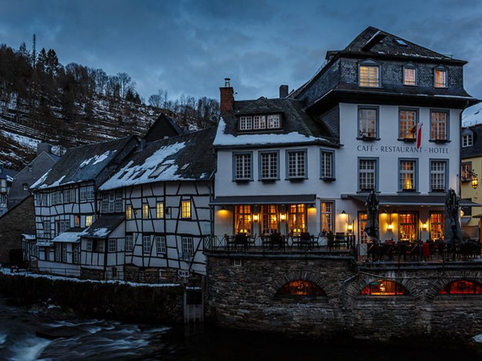
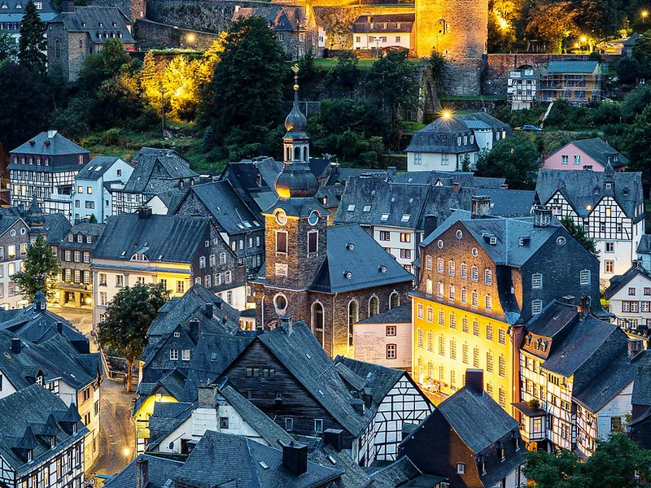
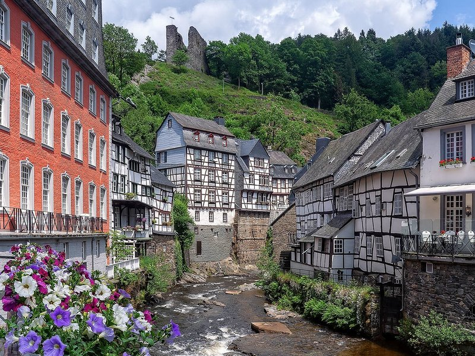
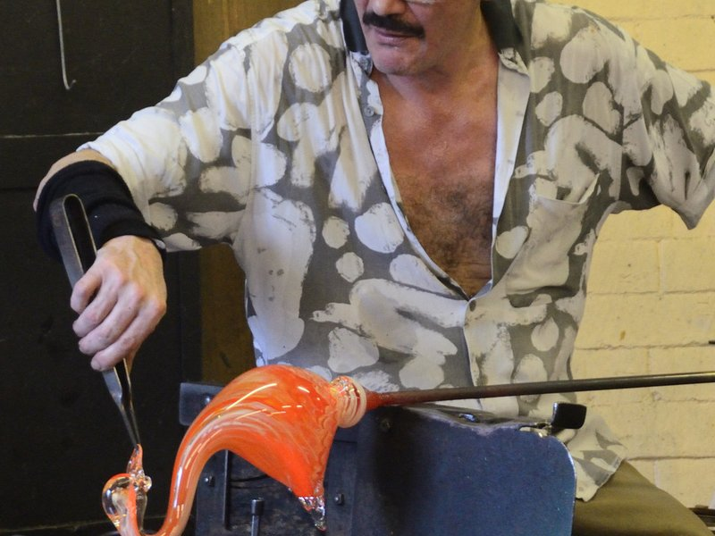
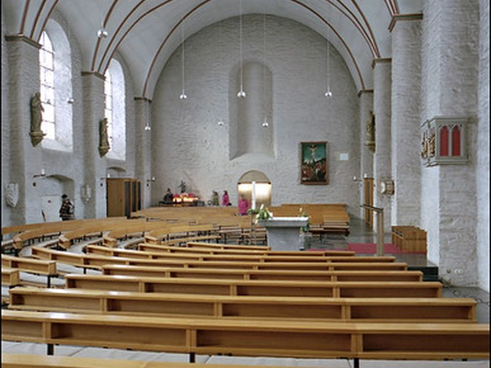
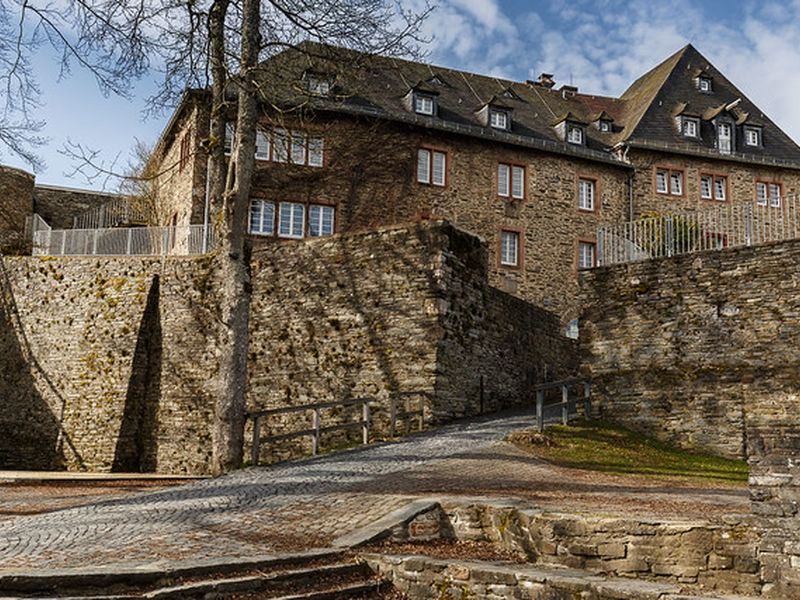

Explore Monschau
A Brief History
Monschau, tucked away dramatically in the narrow, winding valley of the Rur river near the Belgian border, is a pristine, untouched historical gem of the Eifel region. Flourishing immensely in the 18th century due to a booming, highly lucrative cloth and textile industry, its wealthy merchants built the spectacular, towering half-timbered houses that still line the rushing river today. Miraculously escaping wartime damage entirely, Monschau feels like stepping into a romantic, living cultural painting from three centuries ago.
Attractions Map
Top Sights & Activities

Historic Bridges
The Rur River is a sparkling artery that runs through Monschau, and its numerous bridges knit the banks of the town together. Each bridge tells its own story and offers distinct views of the surrounding buildings and lush landscapes. Historical significance is integral to these structures, which have stood witness to the town’s evolution through peace and turmoil.

Monschau Castle
Monschau Castle stands regally as a sentinel over the quaint town, offering a lesson in history as well as breathtaking panoramas. Initially constructed in the 13th century, the fortress embodies the region’s medieval heritage. While it has withstood the passing centuries, today, it isn’t merely a relic to be admired from afar.

Old Town
The Old Town of Monschau is like a storybook setting come to life. With its cobblestone alleyways and timber-framed houses, it thrives as the centerpiece of the town’s enchanting atmosphere. The blend of rustic architecture and the gentle flow of the Rur River provide a haven for artists and photographers.

Monschau Glassworks (Glashütte Monschau)
A short, but steep walk up and down from the main Old Town area, this glassworks in Monschau is where the ancient art of glassblowing is alive and well. You have the unique opportunity to observe master glassblowers at work, creating intricate and beautiful pieces with techniques that have been passed down through generations. The transparency and form of the material transform into intricate designs right before your eyes, from vases to Christmas ornaments.

Mustard Mill (Historische Senfmühle)
The Historic Mustard Mill is a flavorful monument to Monschau’s culinary tradition. A family-run establishment dating back to 1882, it continues to produce mustard using traditional methods and recipes passed down from generation to generation. Touring this mill allows you to see the lovingly preserved stone grinder in action, which is still powered by the waters of the Rur River.

Red House (Rotes Haus)
The Rotes Haus, a grand 18th-century mansion, is more than just an opulent residence; it’s a trip back in time to the period when the Scheibler family’s textile enterprise was at its height. The building is famed for its imposing main staircase, which is an architectural marvel in itself, and its rooms adorned with original furniture and draperies from the era. A visit here takes one through the evolution of fashion and textile production, industries inherent to Monschau’s prosperity.